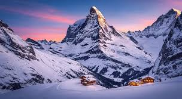
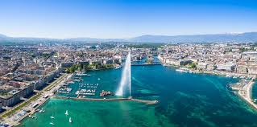
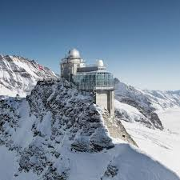
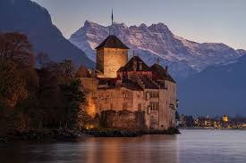

بالألمانية:
جبل ماترهورن من أشهر جبال العالم ويقع في جبال الألب، ويتميز بشكله الهرمي الجميل ويجذب المتسلقين والسياح.
Das Matterhorn ist einer der berühmtesten Berge der Welt in den Alpen. Es ist bekannt für seine pyramidenförmige Spitze und zieht viele Touristen und Bergsteiger an.

بحيرة جنيف من أكبر البحيرات في أوروبا وتحيط بها جبال الألب والعديد من المدن السياحية الجميلة.
Le lac Léman est l'un des plus grands lacs d'Europe. Il est entouré par les Alpes et de nombreuses belles villes touristiques.

يونغفرايوخ يُعرف باسم "قمة أوروبا" وهو أعلى محطة قطار في أوروبا ويوفر مناظر مذهلة للجبال والثلوج.
Das Jungfraujoch wird als „Top of Europe“ bezeichnet und ist der höchste Bahnhof Europas mit spektakulären Ausblicken auf Gletscher und Berge.

قلعة شيلون قلعة تاريخية جميلة تقع على ضفاف بحيرة جنيف وتعد من أشهر المعالم السياحية في سويسرا.
Le Château de Chillon est un château historique situé sur les rives du lac Léman et l'un des sites touristiques les plus célèbres de Suisse.